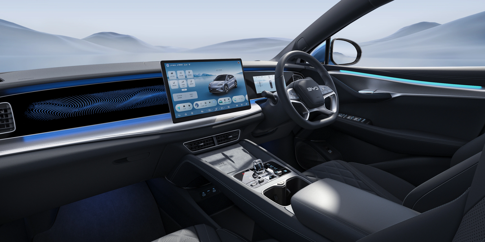
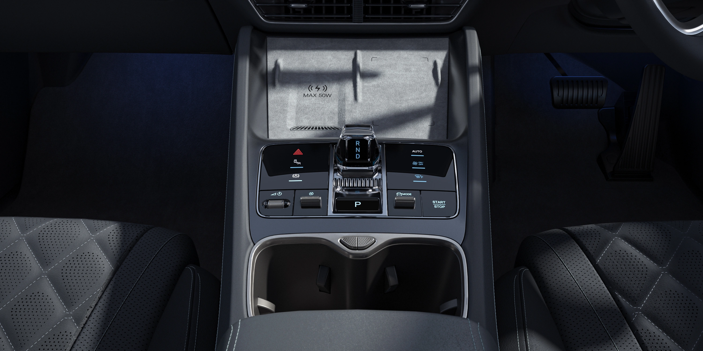
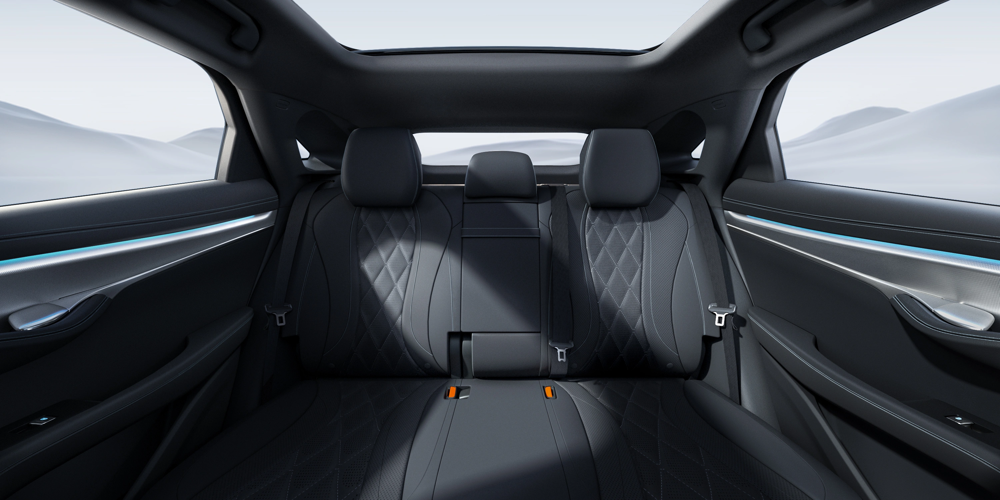

We created a comprehensive 360-degree interactive experience for the BYD Sealion 07. Users can explore both the front cockpit and rear passenger areas, and switch between different interior color trims in real-time.



INTERACTIVE 360° TOUR
Use the controls below to switch between seats and interior colors. Drag to rotate view. Scroll to zoom.